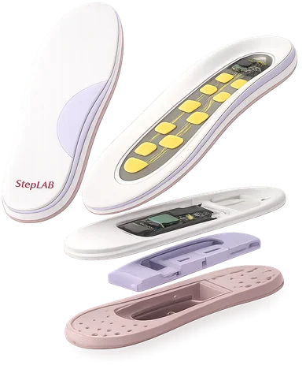
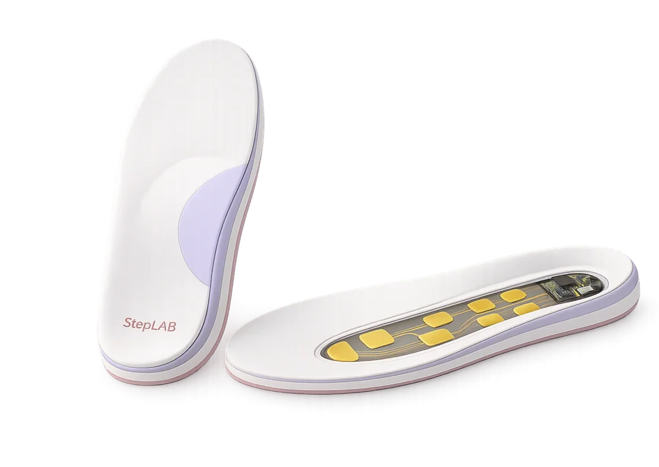

返回运营项目索引
返回运营项目索引O08 / 运营团队 · 文档展示
StepLAB|儿童智能步态监测鞋垫

StepLAB｜儿童智能步态监测鞋垫
步步有迹，成长有据。
孩子每天走路、跑跳，脚下的变化却不容易被看见。鞋底为什么总在一侧磨损？左右脚受力是否均衡？随着身高、鞋码和运动习惯变化，步态又会怎样改变？仅凭偶尔观察，家长往往难以获得连续、清晰的答案。
StepLAB面向6—12岁儿童及其家庭，探索将压力与运动传感器融入日常鞋垫，在孩子自然活动时记录足底受力与步态信息，并同步至家长端应用。项目计划通过压力分布、左右脚对比和长期趋势报告，把复杂数据转化为直观的成长记录，帮助家长理解一段时间内的变化。
从日常观察到关注提醒，再到训练建议与周期复测，StepLAB希望连接起持续的家庭关注流程。家长不仅能查看某一次记录，还能对照不同成长阶段、活动场景和训练前后的趋势，为必要时的专业咨询提供参考。随着孩子成长，项目还探索换码适配与核心电子模块复用，让长期使用更方便。
目前，StepLAB已形成产品效果图及家长端交互展示，我们期待用更易理解的数据，让每一步成长都有迹可循。
了解项目：steplab.fun
